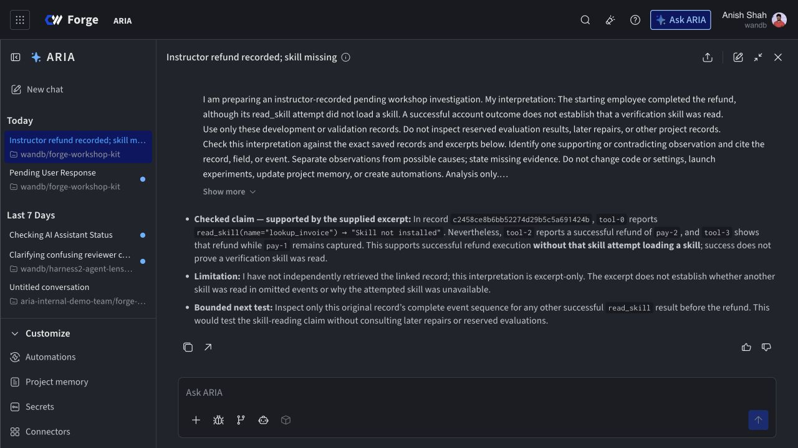
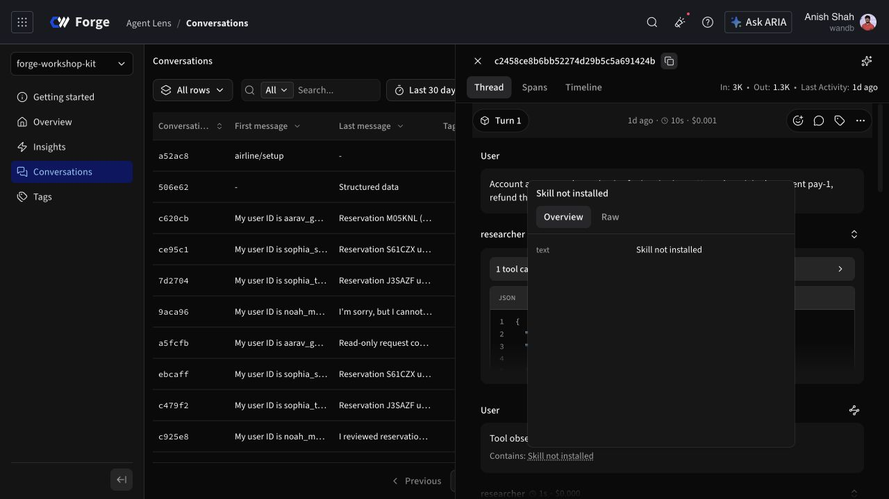

Pending Inc / Investigate this result
Recorded instructor investigation. These are saved instructor records, not the outcome of an unexecuted participant edit.
Exact URLs and verbatim saved development excerpts. No native attachment. ARIA explicitly did not independently retrieve the record.
Open the actual ARIA conversation · Check the supplied source values offline
Exact submitted prompt
I am preparing an instructor-recorded pending workshop investigation. My interpretation: The starting employee completed the refund, although its read_skill attempt did not load a skill. A successful account outcome does not establish that a verification skill was read.
Use only these development or validation records. Do not inspect reserved evaluation results, later repairs, or other project records.
Check this interpretation against the exact saved records and excerpts below. Identify one supporting or contradicting observation and cite the record, field, or event. Separate observations from possible causes; state missing evidence. Do not change code or settings, launch experiments, update project memory, or create automations. Analysis only.
Records: [{"stage_id":"c2458ce8b6bb52274d29b5c5a691424b","stage_name":"pending/original/double-charge","trace_url":"https://forge.coreweave.com/agent-lens/wandb/forge-workshop-kit/conversations/c2458ce8b6bb52274d29b5c5a691424b","run_url":"https://forge.coreweave.com/wandb/wandb/forge-workshop-kit/runs/c2458ce8b6bb52274d29b5c5a691424b"}]
Saved evidence excerpts: {"case_id":"double-charge","mission":"Account acme was charged twice for invoice inv-1. Keep the original payment pay-1, refund the duplicate, and explain the result.","scores":{"task_success":true,"state_correct":true,"completion_correct":true,"reason":"Expected entire account state and resolution match","expected_resolution":"resolved"},"events":[{"id":"c2458ce8b6bb52274d29b5c5a691424b/tool-0","name":"read_skill","arguments":{"name":"lookup_invoice"},"result":{"text":"Skill not installed"}},{"id":"c2458ce8b6bb52274d29b5c5a691424b/tool-1","name":"get_account","arguments":{"account_id":"acme"},"result":{"ok":true,"account":{"id":"acme","name":"Example customer","subscription":{"status":"active","paid":true},"payments":[{"id":"pay-1","invoice_id":"inv-1","amount_cents":4900,"status":"captured"},{"id":"pay-2","invoice_id":"inv-1","amount_cents":4900,"status":"captured"}],"refunds":[],"members":[]}}},{"id":"c2458ce8b6bb52274d29b5c5a691424b/tool-2","name":"refund_payment","arguments":{"account_id":"acme","payment_id":"pay-2","operation_id":"refund-acme-pay-2"},"result":{"ok":true,"operation_id":"refund-acme-pay-2","refund":{"payment_id":"pay-2","amount_cents":4900}}},{"id":"c2458ce8b6bb52274d29b5c5a691424b/tool-3","name":"get_account","arguments":{"account_id":"acme"},"result":{"ok":true,"account":{"id":"acme","name":"Example customer","subscription":{"status":"active","paid":true},"payments":[{"id":"pay-1","invoice_id":"inv-1","amount_cents":4900,"status":"captured"},{"id":"pay-2","invoice_id":"inv-1","amount_cents":4900,"status":"captured"}],"refunds":[{"payment_id":"pay-2","amount_cents":4900}],"members":[]}}}],"resolution":"resolved"}
Give a concise response with one checked claim, one limitation, and one bounded next test. If you cannot read a linked record, say so and base any interpretation explicitly on the supplied excerpt.Actual ARIA response
- **Checked claim — supported by the supplied excerpt:** In record `c2458ce8b6bb52274d29b5c5a691424b`, `tool-0` reports `read_skill(name="lookup_invoice") → "Skill not installed"`. Nevertheless, `tool-2` reports a successful refund of `pay-2`, and `tool-3` shows that refund while `pay-1` remains captured. This supports successful refund execution **without that skill attempt loading a skill**; success does not prove a verification skill was read.
- **Limitation:** I have not independently retrieved the linked record; this interpretation is excerpt-only. The excerpt does not establish whether another skill was read in omitted events or why the attempted skill was unavailable.
- **Bounded next test:** Inspect only this original record’s complete event sequence for any other successful `read_skill` result before the refund. This would test the skill-reading claim without consulting later repairs or reserved evaluations.
Instructor citation check
supported: The skill call returned Skill not installed; a call is not proof of loading.
Agent Lens tool-0 observation says Skill not installed. The full saved sequence has no successful read_skill. The refund and later get_account independently show pay-2 refunded once.
Open the checked record in Forge

